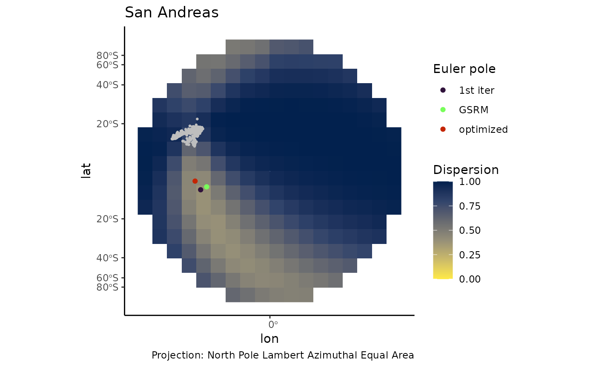
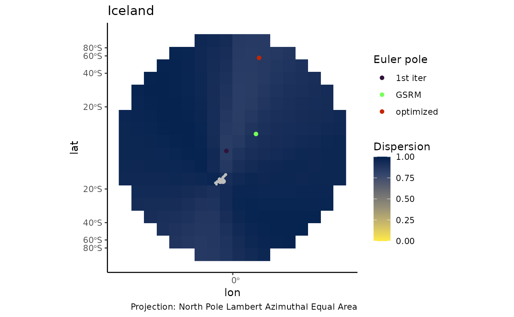

2. Reconstructing Euler Poles from Stress Data
Tobias Stephan
2025-09-10
B_Stress.RmdStresses at the plate boundary are oriented at an specific angle to the relative plate motion of the neighboring plates. The angle depends on the displacement type of the plate boundary. The {tectonicr} package calculates how well a given Euler Pole for relative plate motion explains the stress field in a given region. This principle can also be used to find the best Euler pole for a given stress region.
This tutorial demonstrates how the best-fitting Euler pole can be found from a given grid of locations.
San Andreas Fault - Gulf of California region
Here, all coordinates from a given grid of potential Euler pole
locations are used to measure the dispersion the stress field in the San
Andreas Fault - Gulf of California region. The default settings of the
function latlon_grid create a
grid of locations in the northern hemisphere.
ep_stress_dispersion() calculates the dispersion of the
stress field for each grid location. The function returns a
sf object with the dispersion values for each grid
location. See description of the package {tectonicr} for more
details.
data(san_andreas)
data("cpm_models", package = 'tectonicr')
search_grid <- latlon_grid(gridsize = 10)
res_grid_sa <- euler_stress_dispersion(san_andreas, search_grid, prd = 135)An optimization approach iteratively increases the grid resolution in the low-dispersion regions to find the best-fit location of the Euler pole describing the motion of the Pacific plate relative to North America:
best_ep_sa <- euler_from_stress(san_andreas, prd = 135, iter = 3)Finally, we plot the results and compare the Euler pole solutions from the 1st iteration, the optimized result from multiple iterations, and the Euler pole of the GSRM2 model:
napa <- cpm_models$GSRM2.1 |>
equivalent_rotation("pa", "na") |>
mutate(
is_south = lat < 0,
lon = if_else(is_south, longitude_modulo(lon + 180), lon),
lat = if_else(is_south, -lat, lat)
) |>
st_as_sf(coords = c("lon", "lat"), crs = 4326)
ggplot() +
geom_spatraster(data = res_grid_sa, aes(fill = dispersion)) +
geom_spoke(data = san_andreas, aes(lon, lat, angle = deg2rad(90 - azi)), radius = .75, position = "center_spoke", color = "grey") +
geom_sf(data = san_andreas, color = "grey", size = .5) +
geom_sf(data = napa, aes(color = "GSRM")) +
geom_sf(data = extract_best_ep_from_grid(res_grid_sa), aes(color = "1st iter")) +
geom_sf(data = best_ep_sa, aes(color = "optimized")) +
labs(title = "San Andreas", caption = "Projection: North Pole Lambert Azimuthal Equal Area") +
scale_fill_viridis_c('Dispersion', option = 'E', limits = c(0, 1), na.value = NA, direction = -1) +
scale_color_viridis_d('Euler pole', option = 'H', begin = 0, end = .9) +
theme_classic() +
coord_sf(crs = st_crs('+proj=laea + lat_0=90')) 
Iceland region
Here, the same algorithm is used to find the best Euler pole describing the relative motion between North America and Eurasia using stress data from Iceland:
data(iceland)
euna <- cpm_models$GSRM2.1 |>
equivalent_rotation("na", "eu") |>
mutate(
is_south = lat < 0,
lon = if_else(is_south, longitude_modulo(lon + 180), lon),
lat = if_else(is_south, -lat, lat)
) |>
st_as_sf(coords = c("lon", "lat"), crs = 4326)
res_grid_ice <- euler_stress_dispersion(iceland, search_grid, prd = 0)
best_ep_ice <- euler_from_stress(iceland, prd = 0, iter = 3)
ggplot() +
geom_spatraster(data = res_grid_ice, aes(fill = dispersion)) +
geom_spoke(data = iceland, aes(lon, lat, angle = deg2rad(90 - azi)), radius = .75, position = "center_spoke", color = "grey") +
geom_sf(data = iceland, color = "grey", size = .5) +
geom_sf(data = euna, aes(color = "GSRM")) +
geom_sf(data = extract_best_ep_from_grid(res_grid_ice), aes(color = "1st iter")) +
geom_sf(data = best_ep_ice, aes(color = "optimized")) +
labs(title = "Iceland", caption = "Projection: North Pole Lambert Azimuthal Equal Area") +
scale_fill_viridis_c('Dispersion', option = 'E', limits = c(0, 1), na.value = NA, direction = -1) +
scale_color_viridis_d('Euler pole', option = 'H', begin = 0, end = .9) +
theme_classic() +
coord_sf(crs = st_crs('+proj=laea + lat_0=90')) 
Tibet
Here, the same algorithm is used to find the best Euler pole describing the relative motion between India and Eurasia using stress data from Tibet:
data(tibet)
data("cpm_models")
ineu <- cpm_models$GSRM2.1 |>
equivalent_rotation("in", "eu") |>
mutate(
is_south = lat < 0,
lon = if_else(is_south, longitude_modulo(lon + 180), lon),
lat = if_else(is_south, -lat, lat)
) |>
st_as_sf(coords = c("lon", "lat"), crs = 4326)
res_grid_tibet <- euler_stress_dispersion(tibet, search_grid, prd = 90)
best_ep_tibet <- euler_from_stress(tibet, prd = 90, iter = 3)
tibet.ep.plot <- ggplot() +
geom_spatraster(data = res_grid_tibet, aes(fill = dispersion)) +
geom_spoke(data = tibet, aes(lon, lat, angle = deg2rad(90 - azi)), radius = .75, position = "center_spoke", color = "grey") +
geom_sf(data = tibet, color = "grey", size = .5) +
geom_sf(data = ineu, aes(color = "GSRM")) +
geom_sf(data = extract_best_ep_from_grid(res_grid_tibet), aes(color = "1st iter")) +
geom_sf(data = best_ep_tibet, aes(color = "optimized")) +
labs(title = "Tibet", caption = "Projection: North Pole Lambert Azimuthal Equal Area") +
scale_fill_viridis_c('Dispersion', option = 'E', limits = c(0, 1), na.value = NA, direction = -1) +
scale_color_viridis_d('Euler pole', option = 'H', begin = 0, end = .9) +
theme_classic() +
coord_sf(crs = st_crs('+proj=laea + lat_0=90'))